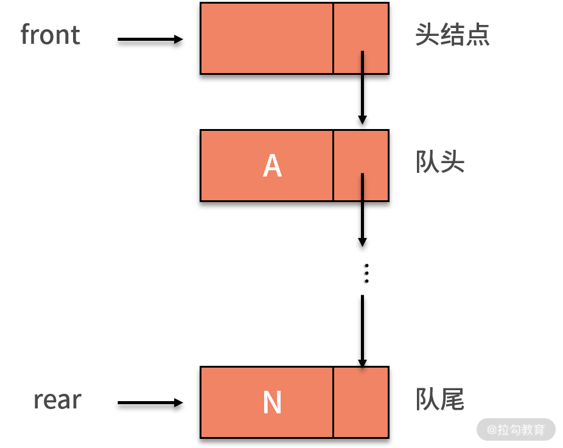
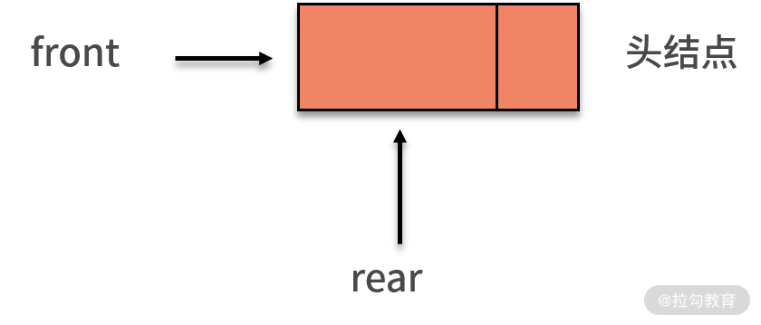
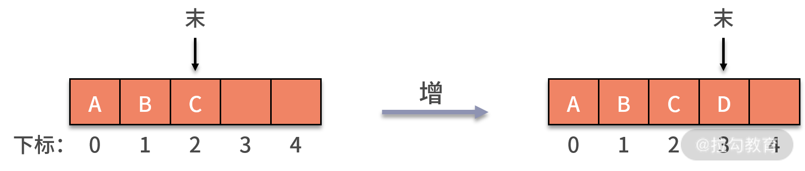
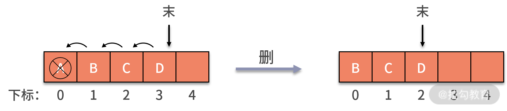
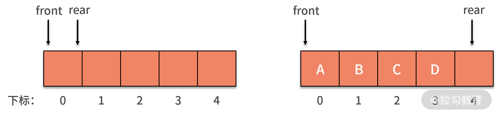
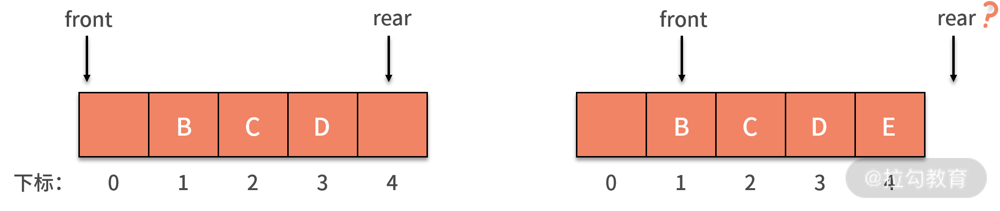
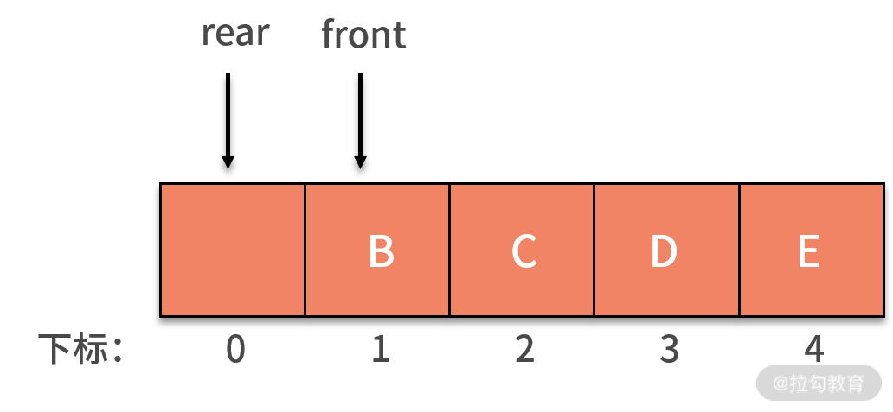
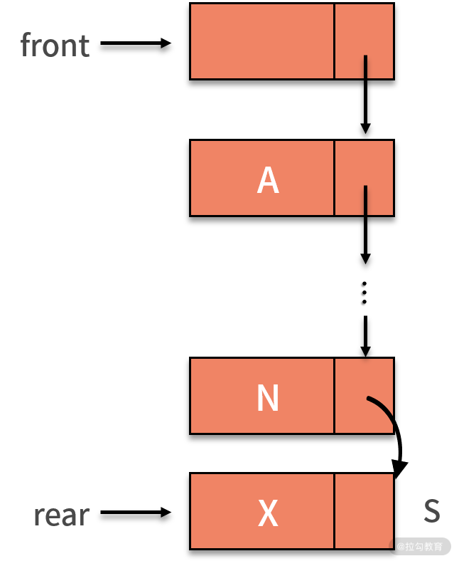
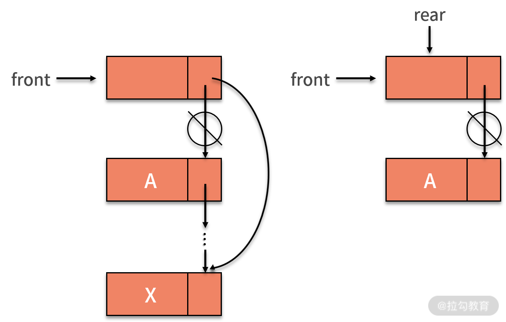

- 00 数据结构与算法，应该这样学！.md.html
- 01 复杂度：如何衡量程序运行的效率？.md.html
- 02 数据结构：将“昂贵”的时间复杂度转换成“廉价”的空间复杂度.md.html
- 03 增删查：掌握数据处理的基本操作,以不变应万变.md.html
- 04 如何完成线性表结构下的增删查？.md.html
- 05 栈：后进先出的线性表，如何实现增删查？.md.html
- 06 队列：先进先出的线性表，如何实现增删查？.md.html
- 07 数组：如何实现基于索引的查找？.md.html
- 08 字符串：如何正确回答面试中高频考察的字符串匹配算法？.md.html
- 09 树和二叉树：分支关系与层次结构下，如何有效实现增删查？.md.html
- 10 哈希表：如何利用好高效率查找的“利器”？.md.html
- 11 递归：如何利用递归求解汉诺塔问题？.md.html
- 12 分治：如何利用分治法完成数据查找？.md.html
- 13 排序：经典排序算法原理解析与优劣对比.md.html
- 14 动态规划：如何通过最优子结构，完成复杂问题求解？.md.html
- 15 定位问题才能更好地解决问题：开发前的复杂度分析与技术选型.md.html
- 16 真题案例（一）：算法思维训练.md.html
- 17 真题案例（二）：数据结构训练.md.html
- 18 真题案例（三）：力扣真题训练.md.html
- 19 真题案例（四）：大厂真题实战演练.md.html
- 20 代码之外，技术面试中你应该具备哪些软素质？.md.html
- 21 面试中如何建立全局观，快速完成优质的手写代码？.md.html
- 加餐 课后练习题详解.md.html
06 队列：先进先出的线性表，如何实现增删查？
通过前面课时的学习，你学会了数据结构中可以灵活增删数据的线性表。在需要严格遵守数据处理顺序的场景下，我们对线性表予以限制，那么就得到了后进先出的数据结构，栈。与之对应的还有一种限制的线性表，它遵循先进先出的性质，这就是队列。这一课时我们就来学习队列的增删查。
队列是什么
与栈相似，队列也是一种特殊的线性表，与线性表的不同之处也是体现在对数据的增和删的操作上。
队列的特点是先进先出：
- 先进，表示队列的数据新增操作只能在末端进行，不允许在队列的中间某个结点后新增数据;
- 先出，队列的数据删除操作只能在始端进行，不允许在队列的中间某个结点后删除数据。也就是说队列的增和删的操作只能分别在这个队列的队尾和队头进行，如下图所示：
与线性表、栈一样，队列也存在这两种存储方式，即顺序队列和链式队列：
- 顺序队列，依赖数组来实现，其中的数据在内存中也是顺序存储。
- 而链式队列，则依赖链表来实现，其中的数据依赖每个结点的指针互联，在内存中并不是顺序存储。链式队列，实际上就是只能尾进头出的线性表的单链表。
如下图所示，我们将队头指针指向链队列的头结点，队尾指针指向终端结点。不管是哪种实现方式，一个队列都依赖队头（front）和队尾（rear）两个指针进行唯一确定。

当队列为空时，front 和 rear 都指向头结点，如下图所示：

队列对于数据的增删查处理
队列从队头（front）删除元素，从队尾（rear）插入元素。对于一个顺序队列的数组来说，会设置一个 front 指针来指向队头，并设置另一个 rear 指针指向队尾。当我们不断进行插入删除操作时，头尾两个指针都会不断向后移动。
为了实现一个有 k 个元素的顺序存储的队列，我们需要建立一个长度比 k 大的数组，以便把所有的队列元素存储在数组中。队列新增数据的操作，就是利用 rear 指针在队尾新增一个数据元素。这个过程不会影响其他数据，时间复杂度为 O(1)，状态如下图所示：

队列删除数据的操作与栈不同。队列元素出口在队列头部，即下标为 0 的位置。当利用 front 指针删除一个数据时，队列中剩余的元素都需要向前移动一个位置，以保证队列头部下标为 0 的位置不为空，此时时间复杂度就变成 O(n) 了，状态如下图所示：

我们看到，front 指针删除数据的操作引发了时间复杂度过高的问题，那么我们该如何解决呢？我们可以通过移动指针的方式来删除数据，这样就不需要移动剩余的数据了。但是，这样的操作，也可能会产生数组越界的问题。接下来，我们来详细讨论一下。
我们一起来看一个利用顺序队列，持续新增数据和删除数据的例子。
初始时，定义了长度为 5 的数组，front 指针和 rear 指针相等，且都指向下标为 0 的位置，队列为空队列。如下图所示：

当 A、B、C、D 四条数据加入队列后，front 依然指向下标为 0 的位置，而 rear 则指向下标为 4 的位置。
当 A 出队列时，front 指针指向下标为 1 的位置，rear 保持不变。其后 E 加入队列，front 保持不变，rear 则移动到了数组以外，如下图所示：

假设这个列队的总个数不超过 5 个，但是目前继续接着入队，因为数组末尾元素已经被占用，再向后加，就会产生我们前面提到的数组越界问题。而实际上，我们列队的下标 0 的地方还是空闲的，这就产生了一种 “假溢出” 的现象。
这种问题在采用顺序存储的队列时，是一定要小心注意的。两个简单粗暴的解决方法就是：
- 不惜消耗 O(n) 的时间复杂度去移动数据；
- 或者开辟足够大的内存空间确保数组不会越界。
循环队列的数据操作
很显然上面的两个方法都不太友好。其实，数组越界问题可以通过队列的一个特殊变种来解决，叫作循环队列。
循环队列进行新增数据元素操作时，首先判断队列是否为满。如果不满，则可以将新元素赋值给队尾，然后让 rear 指针向后移动一个位置。如果已经排到队列最后的位置，则 rea r指针重新指向头部。
循环队列进行删除操作时，即出队列操作，需要判断队列是否为空，然后将队头元素赋值给返回值，front 指针向后移一个位置。如果已经排到队列最后的位置，就把 front 指针重新指向到头部。这个过程就好像钟表的指针转到了表盘的尾部 12 点的位置后，又重新回到了表盘头部 1 点钟的位置。这样就能在不开辟大量存储空间的前提下，不采用 O(n) 的操作，也能通过移动数据来完成频繁的新增和删除数据。
我们继续回到前面提到的例子中，如果是循环队列，rear 指针就可以重新指向下标为 0 的位置，如下图所示：

如果这时再新增了 F 进入队列，就可以放入在下标为 0 的位置，rear 指针指向下标为 1 的位置。这时的 rear 和 front 指针就会重合，指向下标为 1 的位置，如下图所示：
此时，又会产生新的问题，即当队列为空时，有 front 指针和 rear 指针相等。而现在的队列是满的，同样有 front 指针和 rear 指针相等。那么怎样判断队列到底是空还是满呢？常用的方法是，设置一个标志变量 flag 来区别队列是空还是满。
链式队列的数据操作
我们再看一下链式队列的数据操作。链式队列就是一个单链表，同时增加了 front 指针和 rear 指针。链式队列和单链表一样，通常会增加一个头结点，并另 front 指针指向头结点。头结点不存储数据，只是用来辅助标识。
链式队列进行新增数据操作时，将拥有数值 X 的新结点 s 赋值给原队尾结点的后继，即 rear.next。然后把当前的 s 设置为队尾结点，指针 rear 指向 s。如下图所示：

当链式队列进行删除数据操作时，实际删除的是头结点的后继结点。这是因为头结点仅仅用来标识队列，并不存储数据。因此，出队列的操作，就需要找到头结点的后继，这就是要删除的结点。接着，让头结点指向要删除结点的后继。
特别值得一提的是，如果这个链表除去头结点外只剩一个元素，那么删除仅剩的一个元素后，rear 指针就变成野指针了。这时候，需要让 rear 指针指向头结点。也许你前面会对头结点存在的意义产生怀疑，似乎没有它也不影响增删的操作。那么为何队列还特被强调要有头结点呢？
这主要是为了防止删除最后一个有效数据结点后， front 指针和 rear 指针变成野指针，导致队列没有意义了。有了头结点后，哪怕队列为空，头结点依然存在，能让 front 指针和 rear 指针依然有意义。

对于队列的查找操作，不管是顺序还是链式，队列都没有额外的改变。跟线性表一样，它也需要遍历整个队列来完成基于某些条件的数值查找。因此时间复杂度也是 O(n)。
队列的案例
我们来看一个关于用队列解决约瑟夫环问题。约瑟夫环是一个数学的应用问题，具体为，已知 n 个人（以编号 1，2，3...n 分别表示）围坐在一张圆桌周围。从编号为 k 的人开始报数，数到 m 的那个人出列；他的下一个人又从 1 开始报数，数到 m 的那个人又出列；依此规律重复下去，直到圆桌周围的人全部出列。这个问题的输入变量就是 n 和 m，即 n 个人和数到 m 的出列的人。输出的结果，就是 n 个人出列的顺序。
这个问题，用队列的方法实现是个不错的选择。它的结果就是出列的顺序，恰好满足队列对处理顺序敏感的前提。因此，求解方式也是基于队列的先进先出原则。解法如下：
- 先把所有人都放入循环队列中。注意这个循环队列的长度要大于或者等于 n。
- 从第一个人开始依次出队列，出队列一次则计数变量 i 自增。如果 i 比 m 小，则还需要再入队列。
- 直到i等于 m 的人出队列时，就不用再让这个人进队列了。而是放入一个用来记录出队列顺序的数组中。
- 直到数完 n 个人为止。当队列为空时，则表示队列中的 n 个人都出队列了，这时结束队列循环，输出数组内记录的元素。
至此，我们就通过循环队列解决了约瑟夫环问题。代码如下：

public static void main(String[] args) {
ring(10, 5);
}
public static void ring(int n, int m) {
LinkedList<Integer> q = new LinkedList<Integer>();
for (int i = 1; i <= n; i++) {
q.add(i);
}
int k = 2;
int element = 0;
int i = 0;
for (; i<k; i++) {
element = q.poll();
q.add(element);
}
i = 1;
while (q.size() > 0) {
element = q.poll();
if (i < m) {
q.add(element);
i++;
} else {
i = 1;
System.out.println(element);
}
}
}
总结
好的，这一节的内容就到这里了。本节课我们介绍了队列的基本原理和队列对于数据的增删查的操作。可以发现，队列与前一课时我们学习的栈的特性非常相似，队列也继承了线性表的优点与不足，是加了限制的线性表，队列的增和删的操作只能在这个线性表的头和尾进行。
在时间复杂度上，循环队列和链式队列的新增、删除操作都为 O(1)。而在查找操作中，队列和线性表一样只能通过全局遍历的方式进行，也就是需要 O(n) 的时间复杂度。在空间性能方面，循环队列必须有一个固定的长度，因此存在存储元素数量和空间的浪费问题，而链式队列不存在这种问题，所以在空间上，链式队列更为灵活一些。
通常情况下，在可以确定队列长度最大值时，建议使用循环队列。无法确定队列长度时，应考虑使用链式队列。队列具有先进先出的特点，很像现实中人们排队买票的场景。在面对数据处理顺序非常敏感的问题时，队列一定是个不错的技术选型。